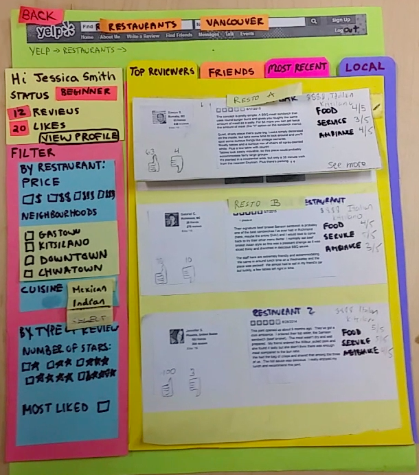
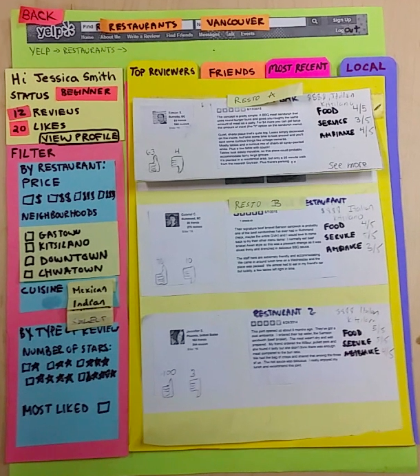

Redesigning Yelp
How would our restaurant searching experience change if we had a feed of reviews Instagram or Facebook style?
How would our restaurant searching experience change if we had a feed of reviews Instagram or Facebook style?
Create a Yelp interface to improve the experience of reading reviews to search for restaurants.
Our team's previous study showed that users found reviews to be an important criteria while deciding on a restaurant. However, users could not rely on just anybody's reviews. The trustworthiness and quality of reviews would be an important factor in improving their Yelp experience.
We redesigned the Yelp experience from a social media perspective: we added a feed that revolved around reviews of restaurants. This way, users could consider restaurants their friends have reviewed, and scroll through a feed of top reviewers on Yelp. Quality of reviews would be determined by user rating.
1- How easily did users acquire the intended mental model?
2- What difficulties did the user face when using the new filtering features?
3- What interactions in the interface failed to provide the user with an appropriate level of feedback and visibility?
The first step was the create personas, then put them in scenarios that would show us how a person would use this product. We then wrote some task examples that would build a full portrait of the user but did not point to any specific solution. Requirement documentation also helped us determine scope for the project.
The next step was to make some low-fidelity prototypes. Because this is a very early stage, paper prototypes were the best option to create multiple versions very quickly. First, we made some sketches on paper. Then we made some "interactive" paper prototypes with which we could run cognitive walkthroughs with some users.
 

Cognitive walkthroughs proved its importance in the project. Some elements that seemed to be very intuitive at first were confusing for a number of people. Mainly, users were confused about reviews for restaurants vs. reviews of reviews. Another point that was interesting was that a dyslexic user mentioned that they did not understand the different tabs of top reviews, friends, and others at first glance. These gave us important insights into how the user's mental model of our product would be and helped us iterate for the next step of the design.
Iterating from the previous step, we made our medium fidelity prototype using Justinmind, an interactive prototyping tool. As the goal of our evaluation was more focused on the user’s workflow through various tasks, the prototype had to be designed in a way that implemented enough functionality so that the user could get a realistic sense of all the main features that were available in the interface. (Is the next sentence needed?) It is important to note that the purpose of this prototype was to test out a specific interaction and that the interface is not fully implemented and the UI does not need to look beautiful in this stage. Demo available here.
The medium fidelity prototype needed to be evaluated to determine whether the user was able to acquire the correct mental model of the system without any confusion.
We performed an interview-like think-aloud observation as the main evaluation method as it allowed users to express their thoughts while the questions forced them to further elaborate on anything they found interesting or confusing.
We then gather data with a follow-up questionnaire because users were more likely to express their honest opinions when filling out a questionnaire alone as opposed to an interview.
There was also a final follow-up interview in order to allow the user to express any final thoughts that may have been missed in the observation or the questionnaire.
Triangulating with the above evaluation methods, we were able to collect both qualitative and quantitative data which allowed for more thorough analysis in the end.
From the usability study, we made the above affinity diagram to find patterns among qualitative data. From the questionnaires, we generated the graph below.
This study showed that the design of the interface has many strengths, but some deficiencies that need to be addressed exist. Specifically, changes need to be made to the current design to eliminate transfer effects and allow users to acquire this mental model more easily. Overall, the study proved that the interface has the potential to be a useful tool for browsing and reading reviews if some minor changes were made that address the problems that were found during the user study.
OR THIS paragraph? OR can choose some of both
The user studies proved that the overall design shows potential to be an effective tool that
users would prefer to use to search for restaurants. However, minor adjustments undoubtedly
need to be made to fix the issues discovered. Primarily, the user studies showed that due to
transfer effects, users had difficulty developing the current mental model of the system.
By changing the layout or shape of the review to emphasize that it is a review might help the
user in better understanding the system.
1- Developing solid evaluation goals early on is essential, as they are the foundation of the design study.
2- Iterating and reiterating the steps of the process is necessary, as each iteration leads to better
results and overall improvement.